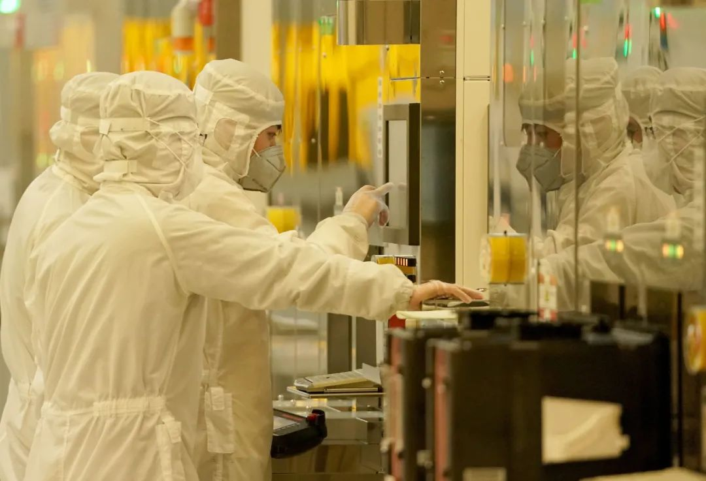

深圳将全面取消企业复工复产审批，先复工再核查
原文链接 备份链接 图片来源：视觉中国 记者：梁宙 “ 对于达到复产复工标准的企业，现在即可在报备后先行复产复工，无须等待审核或批准。 ” 2020年2月20日，界面新闻从深圳市新型冠状病毒感染的肺炎疫情防控指挥部办公室获悉，深圳市将全面 …

武汉的当务之急
是在科学抗疫和有序复工之间寻求一个平衡


2月3日，工人在武汉雷神山医院建设工地施工。疫情期间，武汉市新建了火神山、雷神山医院，改造建成方舱医院33个，提供方舱医院床位35673个。摄影/长江日报 陈亮
在新冠疫情严防严控要求下，全国各地进入复产复工阶段。
3月13日，国务院联防联控机制新闻发布会上，工业和信息化部副部长辛国斌透露出的信息显示，全国除湖北外的规模以上工业企业平均开工率超过95％，企业人员平均复岗率约为80％；中小企业开工率已达到60％左右。
即使就疫情最为严重的湖北全省而言，疫情级别低的地级市也开始着手部署有序复工，经济期待重启。
但对于首个封城的武汉市来说，全面复工尚不乐观。目前的疫情防控任务依然艰巨，大面积复工的时间尚不明朗，其经济损失有逐渐呈扩大的趋势，并有可能对武汉的经济运行带来中长期影响。
“一季度影响肯定很大。”近日，武汉市发改委一位不愿具名的官员向《中国新闻周刊》表达了担忧，目前很多数据基本为零，像武汉这样的南方城市，按照往年的情况，一季度是要实现开门红的。但受疫情影响，今年一季度的各项经济指标基本落空，后续经济如何补救，如何帮助企业生存下去，对于武汉市政府来说，将是巨大的考验。
经济之殇
3月初，国务院联防联控机制新闻发布会上，财政部副部长许宏才向外界透露，1月份湖北省一般公共预算收入保持增长，2月份情况发生了比较大的变化，只有零星收入入库，进入3月份后，国库收入仍然会保持零星入库。
可以推测，作为占湖北财政收入半壁江山的武汉，今年前3个月的财政收入可想而知。
在财政大幅减收的情况下，支出却大大增加。据《中国财经报》显示，截至3月12日，武汉市财政已安排疫情防控资金71.16亿元，全部用于集中收治医院建设、医疗救治、集中隔离等疫情防控工作，其中支持88家定点扩容改造收治病人。此外，新建火神山、雷神山医院，改造建成方舱医院33个，提供方舱医院床位35673个，建立集中隔离点775个，提供集中隔离点床位51925个，保障315支医疗队、35591名医疗队员食宿行。
疫情造成武汉市大部分经济活动停滞，由于居民在家隔离，线下消费受到严重影响。从目前的一些报道来看，首当其冲的是餐饮、酒店、旅游、娱乐、交通等行业，这些行业严重依赖现金流，在本应消费旺盛的春节黄金周却匆忙闭店停业，没有收入渠道，却还需要承担房租、员工工资等成本，现金流面临巨大考验。
武汉大学中国新民营经济研究中心主任罗知在调研中了解到，武汉一家著名的足浴连锁店已经面临破产，“一个月光所有门店的房租就有1000万元，员工工资5000多万元，停业两个多月就损失了一亿多，老板心灰意冷，已经打算关店了。”
这和全国情况大致相同。2019年春节黄金周期间，全国零售和餐饮企业实现销售额超过1万亿元，而2020年春节消费大幅度减少，有关企业收入出现断崖式下跌。据普华永道预测，今年一季度全国整体社会消费品零售额增速可能会放缓5～6个百分点。
“对于这类企业而言，如果能够熬过去，或许还能找回市场，逐渐恢复。而对于制造业来说，长期不复工带来的后果是长远的。”罗知向《中国新闻周刊》解释，制造业的订单大多一年一签，随着湖北以外省份陆续复工，在汉制造企业的市场份额或将被瓜分，等到复工时，今年的订单可能已经所剩无几，“更重要的是，如果今年的订单拿不到，等到明年，之前的市场关系可能已经被替代。”
由此会形成产业链上一系列传导效应——链条上的某一个企业破产，可能会影响链条上的其他企业。
据武汉大学中国新民营经济研究中心调查，湖北70％的产业链都在省内，容易形成省内大面积的破产潮。一些大企业固然能存活，但经此一役元气大伤，销售额可能会下降，背后的数千家中小供应商可能会受到影响。
而在鄂企业中，80％的人才在省内，在这种情势下，除了人才和资金的外流，更大的后果可能是失业带来的消费下滑。罗知预测，今年湖北省特别是武汉市的居民可支配收入至少会下降两成左右，而且收入的下降会造成消费的下滑。消费下滑还会通过乘数效应放大，因为消费不足会进一步引发需求不足，减少供给，从而带来更大面积的企业破产。
也正因为如此，罗知和她所在的课题团队在短短数日内形成了3个调研报告，在3月初提交给湖北省和武汉市两级政府的政策研究部门，期待引起相关部门重视。“武汉必须将工作的重心，从全面抗疫中分一部分到经济中来，将企业复工复产提上议事日程，不然，真的来不及了。”
实际上，湖北省和武汉市相关部门已经开始着手研究对策。据悉，3月初，湖北省人民政府办公厅政研室已经组织武汉大学、华中科技大学等相关经济学家对当前的经济形势进行分析。
而上述武汉市发改委不愿具名的人士也向《中国新闻周刊》透露，3月6日，武汉市长周先旺曾召开专题会，研究企业复工复产问题，在此之前，武汉市发改委等宏观管理部门已开展先行研究，一些统计数据正在修改讨论中。
根据去年武汉市政府发布的统计数据显示，2019年一季度，武汉市实现地区生产总值3357.48亿元，比上年同期增长8.4％，创2016年一季度以来13个季度新高，高于全国2个百分点。
但受疫情影响，目前今年武汉市1、2月份相关经济数据尚未发布。
差异化复工
武汉的疫情态势在向好的方向发展，3月6日，武汉新增确诊人数降至两位数，3月11日，新增确诊人数降到个位数。
与此同时，复工的相关准备也在悄然进行，2月末，湖北多地上线“湖北健康码”申领系统，健康码分为“红、黄、绿”三色，结合个人自主申报和政府部门防疫信息自动审核、自动生成二维码，作为防疫期间的电子通行证，在各个检查点出示健康码并接受检查，持有绿码的方可通行，持“黄码”“红码”则需隔离、医治。
3月9日，在预定的复工日期前一天，湖北省委书记、省新冠肺炎疫情防控指挥部指挥长应勇召开会议，要求根据各地疫情风险等级，实行分区分级管控，在实施省内人员“健康码”管理的基础上，适时推动人员安全有序流动和企业分类分时复工复产。
当天晚间，两份红头文件的批复在网络流传，分别是武汉开发区（汉南）新冠肺炎疫情防控指挥部批复同意东风本田汽车有限公司及供应商复工，以及江夏区新冠肺炎疫情防控指挥部批复同意上汽通用武汉分公司38家配套企业在外人员分批有序返汉，落款日期都是3月9日。
次日上午，《中国新闻周刊》向武汉开发区方面求证，对方表示并不知情，还需要核实，但截至发稿，依然未得到答复。
彼时，武汉的复工复产形势尚不明朗，直到3月10日晚间，中共中央总书记、国家主席、中央军委主席习近平在武汉考察疫情防控工作后，要求在加强防控的前提下，采取差异化策略，适时启动分区分级、分类分时、有条件的复工复产。这番讲话传递出中央的态度和信心。
3月11日上午，湖北省潜江市发布26号通告，宣布解封，但很快又宣布取消26号通告，继续实行严格的交通管制、人员管控。此举令湖北省的复工复产局势变得愈发扑朔迷离。
当天下午2点，湖北省人民政府网站发布通告，以县域为单位，在省内划分低、中、高风险区，实施分区分级差异化防控，企业分类分时有条件复工复产，具体行业企业实行灵活动态管理。其中，武汉市涉及保障疫情防控必需、公共事业运行必需、群众生活必需、农业生产必需以及其他涉及重要国计民生的企业可以复工复产。
此外，通告提出，对全国、全球产业链配套有重大影响的企业，在防控措施到位、防控责任落实的前提下，按程序批准后可以复工复产，春节以来未停工停业的企业可以继续生产。
据武汉市发改委上述不愿具名的官员透露，武汉市已成立企业复工复产指挥部，设在武汉市经信委。
然而，武汉市经信委却向《中国新闻周刊》否认了这一说法，称主要牵头单位是市发改委，经信委只负责工业企业复工复产相关政策的研究制定。至于哪些属于涉及重要国计民生和对全国、全球产业链配套有重大影响的企业，武汉市经信委并没有给予进一步解释。
综合各方信息来看，企业是否批复，哪些企业会被批复，决定权掌握在各区新冠肺炎疫情防控指挥部手中。从字面意思来看，大部分严重依赖现金流的服务业，在产业链中没有话语权的中小企业不在此次复工的行列，复工日期再次顺延，按不早于3月20日24时前复工复产。

2月14日，武汉新芯集成电路制造有限公司员工在检测芯片制造设备。在疫情期间，该企业一直坚持生产。图/新华
对于复工企业而言，员工可凭健康码“绿码”，与湖北省内流入地采取“点对点”运输方式流动，换句话说，员工只能乘坐指定的交通工具上下班，城市公交继续停运。
一位已经复工的通信行业企业负责人向《中国新闻周刊》透露，为了保障复工期间的安全防控，公司需要派公车挨个将员工接到公司，并提供员工宿舍，保证每人一个单间，员工复工后就不能随意在外走动，吃住必须在公司和宿舍，此外，每天还要上报两次体温。
这家企业的总部不在湖北，其他分公司已经陆续复工，总公司并未对武汉分公司提出复工要求，按这位分公司负责人此前的设想，在3月末复工较为稳妥，没想到下游客户申请复工时，将他们作为供应商一同申请，获批后不得不提前复工。
“从申请到获批大概用了五天时间。”上述负责人表示，首先公司需要向区新冠肺炎疫情防控指挥部提交申请，展示防疫物资的储备，并安排专人对员工进行监控，保证复工期间的防疫安全。
只是，员工的复工意愿并不强烈，一番动员下，也只到岗了20％的员工，“仅能满足核心产品的交付”。复工后，成本肯定是增加的，但上述负责人表示，只要能复工，能交付产品，肯定就会有盈利，“只是较平常盈利可能会减少一半”。
这位负责人更担心的是物流——原材料如何进来，产品如何出去？他已经申请了顺丰速运的大客户渠道，但情况并不理想。据他盘算，目前的物料仅能维持两周的生产，如果两周后物料依然进不来，就会面临工人无活可干的尴尬场景。
从全国情况来看，企业复工复产情况也并不理想。中建三局对其他地区已复工项目进行分析，发现从项目复产资源准备，到全面恢复生产，预计需要15天以上的时间，有的地方还对外地员工有14天隔离要求。“由于武汉可能是最后实现复工复产的地域，在此之前其他城市的物流、资源供应等应该都会放开，预计武汉从复工到恢复正常生产，时间大概可以缩短到7天左右。”
严苛的复工要求，无形中将复工日期再次延长。截至3月13日，东风汽车集团的一位技术人员向《中国新闻周刊》透露，仍未收到公司的复工通知，“武汉这么大，复工的前提应该是恢复公共交通，难道走路去上班吗？”
“抗击疫情是最大的政治”
无论如何，分级分区、分时分类的复工复产已是迈出经济恢复的一大步，只是，这一步能不能有效落实还尚未可知。
一个值得关注的问题是，目前从湖北省到武汉市，各级政府机关还有很多公务员下沉社区，投入抗疫工作。
《中国新闻周刊》向多位在汉公职人员询问发现，无论是省一级还是市、区两级，是业务部门还是行政部门，都对公务员下沉社区有硬性要求。省级机关工作人员要求就近下沉，市直以下机关工作人员不但要求下沉，还有督导组进行监督。除此之外，汉口银行这类市属企业也要求在保证部分网点的同时，大部分员工下沉社区。
据武汉市2月28日的官方数据显示，彼时武汉市组织各级的党政机关和企事业单位的党员干部5万多人、社区干部3万多人、志愿者5万多人下沉到社区，“开展拉网式的逐步排查，不留死角、不留空白，做到应收尽收。”
“在抗击疫情的前期，政府工作人员下沉社区确实可以起到一定的作用，但到了现在这个阶段，政府应该采取一个更加科学、合理和有效的办法来防控疫情，而不能不分阶段、不分地区、不分情况，始终将抗疫作为主要工作。”中国国际经济交流中心首席研究员张燕生向《中国新闻周刊》分析。
在张燕生看来，目前，武汉每日新增确诊人数越来越少，武汉以外地区主要是输入型病例管控，重点是复工复产复课以及经济社会生活正常化后的疫情控防，社区防疫工作完全可以交给大数据和专业人士，交给信息的透明度和市民的自觉，交给输出与输入地主管部门协调机制，从而将政府职能机关从抗疫工作中解脱出来，工作重心转回到企业复工复产，物流、资金流、信息流、人才流的畅通，帮助老百姓回到正常的经济文化、社会生活中来。
“但现在的问题是，抗击疫情是最大的政治，不组织复工，不承担责任，但复工后一旦出现新的疫情，主政者会担负很大责任，这也制约了各地复工复产的积极性。”张燕生建议，当务之急，在科学抗疫和有序复工之间，主政者应寻求一个平衡。
此前，各方对武汉经济重启的判断是先解封，再复工复产，但从最近湖北省的一系列操作来看，由于解封阻力重重，加上目前全国新增确诊多是境外输入，因此，在省内先分区分级管控，分类分时复工复产，唤醒经济活动后再根据疫情的情况适时解封，或许是更为适合的方式。
罗知则认为，复工复产可以遵循优先原则，有员工宿舍和食堂的企业，自动化程度高的企业，大型资本密集型的企业和外贸企业可以先复工。至于剩下的企业，政府应该统一出台标准的防疫流程，通过流程去检查企业，达标了就可以复工。即使一些中小企业暂时达不到食堂和宿舍的条件，可以通过租用酒店，配送餐饮来实现，“办法总比困难多！”
“对于武汉来说，目前最需要的，短期是复工，长期是中央政策，缺一不可。”罗知说。
自救与他救
近期，武汉市经信委已经发布两版《武汉市应对疫情惠企政策汇编》，收录中央到省市区各级政策，以及政策实施细则共132条，但罗知在调研中发现，这些政策的落地效果并不明显。有民营企业家向她表示，虽然政府有很多税收优惠和社保减免政策，但是这些政策对企业而言都是事后政策，远水解不了近渴，企业没有现金流根本无法生存。
在中央财经大学教授温来成看来，由于全国两会尚未召开，为应对武汉财力紧张的局面，可能会对预算进行适当调整，加大对湖北和武汉的专项转移支付，增加湖北省的举债额度。一些分散在各部委的专项资金和项目，也可以与湖北、武汉对接，此外，还可以借助汶川灾后重建的模式，对口支援湖北省各城市经济发展。
从自身动力看来，武汉市本身处于一个交通发达的区域，可以采取更加灵活的政策，比如通过适度增加土地供给，或者对受损严重的行业企业采取税费减免措施，帮助企业在之后有快速增长，将损失降低到最低限度。此外，还可以适度放宽赤字率，通过投资拉动增长。
今年，武汉市提出建设230个市级重大项目，力争民间投资占到52％以上，从目前来看，要实现这一目标也面临着无米下炊的境地。而这一轮投资，从目前全国多个省份公布的情况来看，并非传统的铁公基，而是以新基建为主。张燕生认为，武汉具备投入新基建的条件，武汉有光谷，有长江存储芯片，有武汉经开区、长江新城，还有东湖实验室，“未来新基建的重点就是5G等新一代信息技术为代表的新科技，就是交通运输、能源和新能源、信息通讯等传统基建的升级版，就是社会基础设施的完善版，利用这些优势，在疫情后建设一个新武汉”。
这些年，武汉大力发展新经济，不断增长研发投入，促进新动能的发展，据今年武汉市政府工作报告，2019年全社会研发经费（R&D）投入比去年增长10％。张燕生曾将湖北省（主要是武汉市）的研发强度归为全国第二梯队，属于投资驱动型，在疫情暴发前的武汉市两会上，武汉市政府工作报告计划今年全社会研发经费（R&D）投入增长10％。
然而，随着疫情暴发，财政收入锐减，加上去年为筹办军运会也耗费了大量财力，今年武汉市财政支出实现“三保”（保工资、保运转、保民生）尚且困难，加大研发投入更是难以想象。
从外部动力来看，武汉难以靠自身力量恢复经济，一方面靠民间投资，另一方面靠中央政策扶持。
从民间投资来看，如何合理利用武汉庞大的校友和楚商资源，考验着政府的智慧。2月22日，中央政法委秘书长陈一新刚回武汉担任中央指导组副组长不久，就专门与校友、楚商座谈，勉励他们继续回馈社会，携手打赢武汉保卫战。随后，校友楚商企业发起“白衣天使就业保障计划”，拿出超过2万个岗位专门提供给一线医院医护人员的子女。
3月12日，陈一新在武汉卓尔书店再次与楚商企业家会面，要求打赢“第二仗”。围坐一堂的，有武汉高德红外公司董事长黄立、卓尔控股董事长阎志、中珈资本CEO曾文涛和楚商联合会秘书长蹇宏远。而泰康保险集团董事长陈东升、小米科技董事长雷军、融创集团董事长孙宏斌、中诚信集团董事长毛振华，也通过视频连线的方式参与这次座谈。未来，在武汉经济复苏的“保卫战”中，楚商和校友资源或将发挥更大作用。
除了企业资源，如何从中央争取更多国家重大科学装置、重大科学专项、重大科学攻关项目的支持，也是未来武汉推动高质量发展的关键。在张燕生看来，此次疫情尽管暴露了武汉的社会和公共治理的短板，但或许也能给武汉带来一些重大机遇。从公共卫生治理体系入手，未来如果中央能给武汉更多的新时代改革开放的先行先试机会，从公共卫生和公共治理体系和能力现代化先行示范区起步，武汉将能得到更大发展。
值班编辑：石若萧
推荐阅读
▼


国际公共卫生专家：美国疫情防控迎来转折点，未来几周病例会迅速上升


原文链接 备份链接 图片来源：视觉中国 记者：梁宙 “ 对于达到复产复工标准的企业，现在即可在报备后先行复产复工，无须等待审核或批准。 ” 2020年2月20日，界面新闻从深圳市新型冠状病毒感染的肺炎疫情防控指挥部办公室获悉，深圳市将全面 …
原文链接 备份链接 本报记者 郝嘉奇 郝成 北京报道 一家环保企业复工需要八个单位盖章，此事在网上引起争议。2月12日，中七建工集团华贸有限公司提交了复工申请表，并在四川省泸州市江阳区新型冠状肺炎疫情防控指挥部的要求下，由八个单位盖章审批 …
原文链接 备份链接 暂停过后，安全重启 “按照年前的计划，1月31日开工以后这批订单马上就出货了。现在不仅老订单推迟交付，其他业务也基本暂停了。”某机床零配件加工厂的老板林浩坦言，疫情对厂子最大的影响就是产能和物流，随之而来的就是日渐吃 …
原文链接 备份链接 2019年上半年占据湖北省GDP约五分之一的112家省内上市公司，目前复工情况各异。部分公司影响不大，但也有企业收入面临较大下滑风险 文丨《财经》记者 张建锋 王颖 张欣培 刘以秦 编辑丨陆玲 3月16日，《财经》记 …
原文链接 备份链接 【财新网】（记者 萧辉）“隔离！隔离！尽快隔离！” 2月1日，华中师范大学大数据传播与应急管理研究中心主任喻发胜在呈送给中央及湖北省、武汉市防疫指挥部的内参文章中，连续用了三个粗体感叹号。 “传染病传播和爆发期的首要任 …